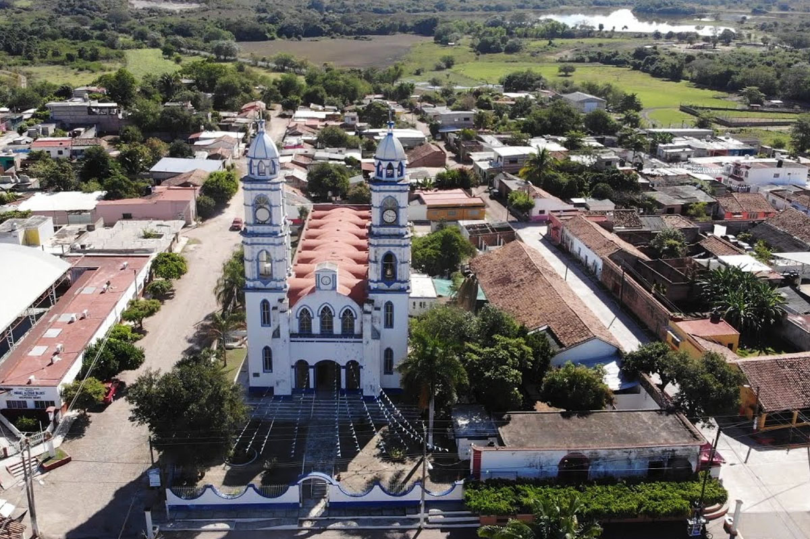
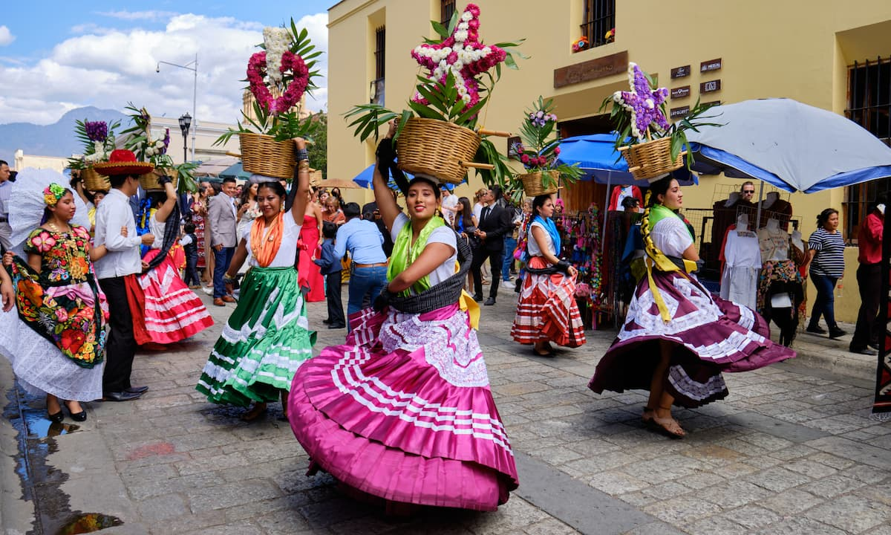
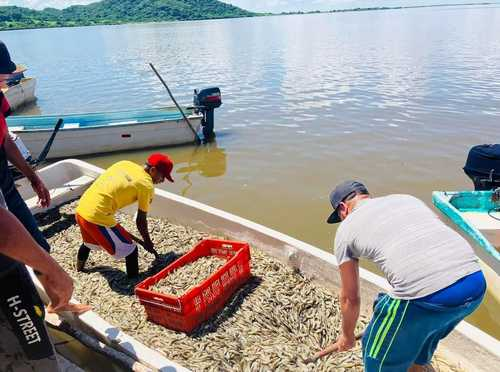

Rosamorada es un municipio situado en la regi n norte del estado de Nayarit, M xico. Limita al norte con el estado de Sinaloa y al sur con los municipios de Acaponeta y Tecuala.
Las fiestas m s destacadas de Rosamorada incluyen la celebraci n en honor a la Virgen de la Asunci n, que se celebra el 15 de agosto, adem s del carnaval, con danzas y m sica popular que re nen a los habitantes y visitantes del municipio.
La econom a de Rosamorada est centrada en la agricultura, destac ndose la producci n de ca a de az car, ma z y frijol. Tambi n tiene una importante actividad pesquera debido a su cercan a con la costa.
